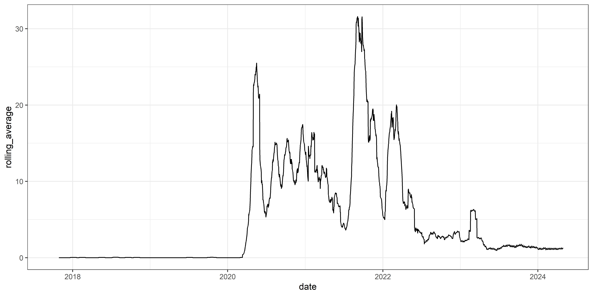
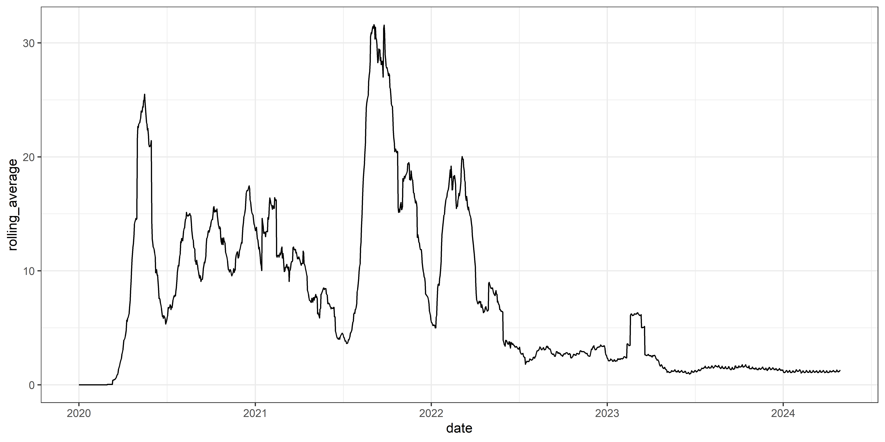
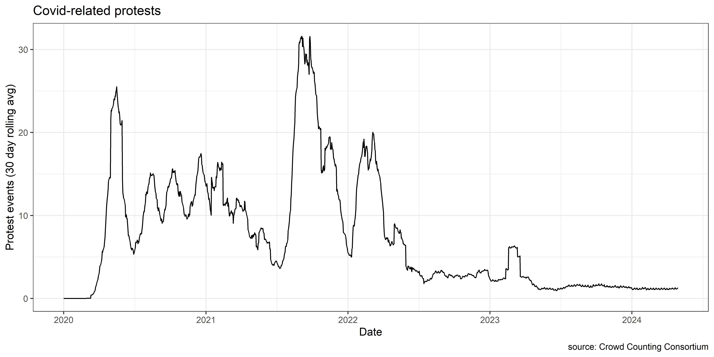
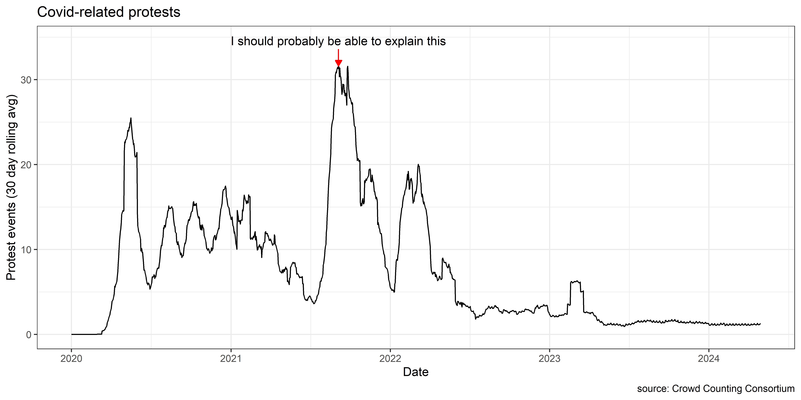
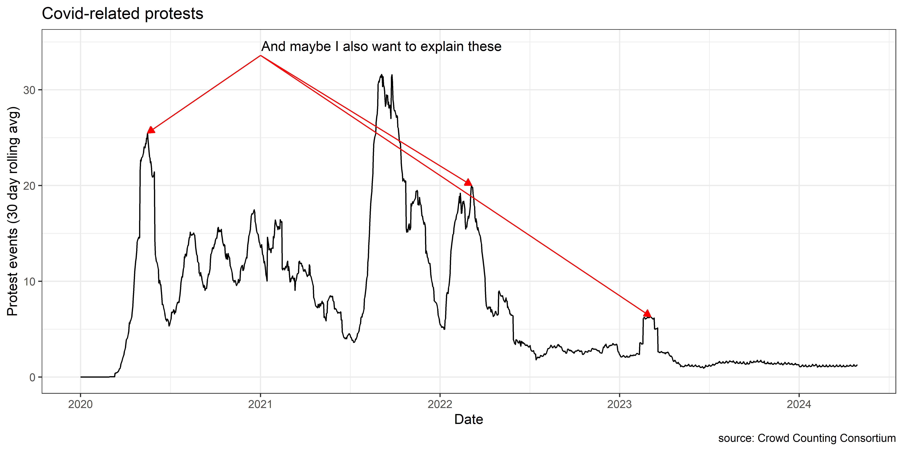

library(tidyverse)
# column specification - this just ensures that the column types are interpreted properly
cspec = cols(
.default = col_character(),
date = col_date(format = ""),
online = col_double(),
valence = col_double(),
size_low = col_double(),
size_high = col_double(),
size_mean = col_double(),
size_cat = col_double(),
arrests_any = col_double(),
injuries_crowd_any = col_double(),
injuries_police_any = col_double(),
chemical_agents = col_double(),
lat = col_double(),
lon = col_double()
)
# read both data frames and bind them together (they're in two pieces because they're too large for github)
covid_ccc = bind_rows(read_csv("https://raw.githubusercontent.com/nonviolent-action-lab/crowd-counting-consortium/master/ccc_compiled_2017-2020.csv", col_types = cspec),
read_csv("https://raw.githubusercontent.com/nonviolent-action-lab/crowd-counting-consortium/master/ccc_compiled_2021-present.csv", col_types = cspec ))%>%
# filter based on the "issues" column
filter(str_detect(issues , "covid|corona(virus)?|\\b(anti.?)?mask\\b|fauci|pandemic|\\bcdc\\b|ventilator|personal protective equipment|\\bppe\\b|\\bre.?open|ivermectin|remdisvir|lockdown|(?:wuhan |china )flu|china.?virus"))Review and paper
Forms of analysis
Descriptive: What happened?
Predictive: What will happen in the future?
Explanatory: Why did this event occur?
Forms of analysis
Your paper/presentation should be primarily descriptive, but you should leave some space for prediction or explanation as well.
Forms of analysis
- Answering “why” is often far more complicated than “what happened?”
- Conceptual ambiguity: concepts like claims, success, repression, demobilization etc. are not straightforward
- Confounding: spurious correlations are common, because contentious political actors are strategic actors in an interdependent system
- No true counterfactuals: causation is never really observed
Things to know: Repertoires
- What do participants do?
- Violence vs. nonviolence
- Disruptive vs. nondisruptive
- Novel vs. routine
- Original vs. imitation
Things to know: Frames
What do participants say to participants?
What do they say to their targets/audience?
How do they talk about themselves and their opponents?
Things to know: Claims
What do they want?
Are the goals clear or ambiguous?
Radical or reform-oriented?
Things to know: Actors
- Who are the participants? And is their self categorization contentious?
- Who are they targeting?
- Are the targets different from the audience?
- Are there other relevant actors?
- In the Arab Spring: NGOs, other states, domestic military
- Conscience constituents
Things to know: Political Opportunity structures
- How open is the system?
- How cohesive are the targets?
- Do they have elite allies? What about public opinion?
- How easily can the state repress?
Sources
- Factiva/LexisNexis/Proquest
- books! And encyclopedias
- Government sources (with caution)
- Primary documents (movement websites, tweets, quotes in newspapers etc.)
- CIA world factbook
- Scholarly journals: try the UMD library reload button with Google scholar
Crowd Counting Consortium
Making a timeline
- Get a sequence of days from the earliest date to the latest date. (if you want a narrower time range, swap in some different values in to the
from=andto=arguments)
library(tidyverse)
library(zoo)
all_days = seq.Date(from = min(covid_ccc$date, na.rm=T) ,
to=max(covid_ccc$date, na.rm=T) ,
by='day')
events_per_day = covid_ccc%>%count(date)
events_per_day = complete(events_per_day, date= all_days, fill=list(n=0))
events_per_day$rolling_average = rollmean(events_per_day$n,
k=30,
na.pad=T,
align='right')
tail(events_per_day)Making a timeline
- Get a count of events for each day
library(tidyverse)
library(zoo)
all_days = seq.Date(from = min(covid_ccc$date, na.rm=T) ,
to=max(covid_ccc$date, na.rm=T) ,
by='day')
events_per_day = covid_ccc%>%count(date)
events_per_day = complete(events_per_day, date= all_days, fill=list(n=0))
events_per_day$rolling_average = rollmean(events_per_day$n,
k=30,
na.pad=T,
align='right')
tail(events_per_day)Making a timeline
- Add zeros to the list of events per day with the
completefunction + thefilloption:
library(tidyverse)
library(zoo)
all_days = seq.Date(from = min(covid_ccc$date, na.rm=T) ,
to=max(covid_ccc$date, na.rm=T) ,
by='day')
events_per_day = covid_ccc%>%count(date)
events_per_day = complete(events_per_day, date= all_days, fill=list(n=0))
events_per_day$rolling_average = rollmean(events_per_day$n,
k=30,
na.pad=T,
align='right')
tail(events_per_day)Making a timeline
- Use the
rollmeanfunction from thezoopackage to get a rolling monthly average
library(tidyverse)
library(zoo)
all_days = seq.Date(from = min(covid_ccc$date, na.rm=T) ,
to=max(covid_ccc$date, na.rm=T) ,
by='day')
events_per_day = covid_ccc%>%count(date)
events_per_day = complete(events_per_day, date= all_days, fill=list(n=0))
events_per_day$rolling_average = rollmean(events_per_day$n,
k=30,
na.pad=T,
align='right')Plot the timeline
Now we can easily plot our result
Plot the timeline
Now we can easily plot our result, but it probably makes sense to get rid of the period with no events
Plot the timeline
Now we can easily plot our result, but it probably makes sense to get rid of the period with no events, and add labels and captions
Now what?
Every table or plot should be accompanied with some kind of explanation or analysis.
Now what?
Every table or plot should be accompanied with some kind of explanation or analysis.
So: what happened here?
Now what?
Every table or plot should be accompanied with some kind of explanation or analysis.
So: what happened here? Or around these dates?
Now what?
You could use some sorting and filtering to get a closer look at events around that time and see what you turn up.
Now what?
Taking a closer look
Navigate to the UMD Library Database Finder and check out the “journalism” section.
Select Factiva, and then go to the Search Builder
Navigate to the search builder, then use something like:
- Run something like:
"protest" AND ("covid" OR "coronavirus" or "mask" or "vaccine") AND date from 08/15/2021 to 09/15/2021 AND re=usa
The UMD library has a good guide for searching Factiva available here: link
Taking a closer look
Now I’ve got a lot of news stories, people, quotes, tactics, groups etc to pull from
Making a table or barplot
Use tbl_summary to summarize one or more event characteristics
library(gtsummary)
covid_ccc%>%
# select only the columns you want to summarize, then use tbl_summary()
select(arrests_any, injuries_crowd_any, injuries_police_any, property_damage_any)%>%
tbl_summary()| Characteristic | N = 11,6941 |
|---|---|
| arrests_any | 134 (1.1%) |
| injuries_crowd_any | 40 (0.3%) |
| injuries_police_any | 8 (<0.1%) |
| property_damage_any | 26 (0.2%) |
| 1 n (%) | |
Barplot
Or use a barplot to show counts across one or more categories
covid_ccc%>%
# splitting protests with multiple organizers:
mutate(orgs = strsplit(organizations, "; "))%>%
unnest(orgs)%>%
count(orgs)%>%
filter(!is.na(orgs))%>%
arrange(-n)%>%
slice_head(n=10)%>%
ggplot(aes(y=reorder(orgs, n), x=n)) +
geom_bar(stat='identity') +
theme_bw() +
labs(x = "Number of events", y="Organization", caption="source: Crowd Counting Consortium")Get more detail
Get more detail
Making a histogram
Use histograms, boxplots, or density plots to show the distribution of a single continuous variable
ggplot(covid_ccc, aes(x=size_mean)) +
# get a histogram to show the distribution of event sizes
geom_histogram() +
# adjust the scaling to make this more readable:
scale_x_log10() +
theme_bw() +
labs(x= "estimated crowd size",
caption = "source: Crowd Counting Consortium",
title ="Crowd sizes for Covid-19 protests"
)Making a boxplot
Use histograms, boxplots, or density plots to show the distribution of a single continuous variable
ggplot(covid_ccc, aes(x=size_mean)) +
# get a histogram to show the distribution of event sizes
geom_boxplot() +
# adjust the scaling to make this more readable:
scale_x_log10() +
theme_bw() +
labs(x= "estimated crowd size",
caption = "source: Crowd Counting Consortium",
title ="Crowd sizes for Covid-19 protests"
)Making a map of events
You can use code like this to create an interactive map. Use the result to explore some of the data yourself
library(osmdata)
library(leaflet)
usbox <- getbb("United States of America")
base_map <- leaflet() %>%
addTiles()
# create some popup notes. Just put the names of the variables you want to see here
popup_notes = with(
covid_ccc,
paste(
"Date:", date,
"<br> Actor:", actors,
"<br> type:", type,
# "<br> Description:", notes,
"<br><a href=" ,source_1 ,">Source</a>"
))
clustered_map =
base_map%>%
fitBounds(lng1=usbox[1],
lng2=usbox[3],
lat1 =usbox[2],
lat2 = usbox[4])%>%
addMarkers(data = covid_ccc,
lng=~lon,
lat=~lat,
# groups together overlapping markers. Zoom in to show events
clusterOptions = markerClusterOptions(),
# create a popup to show additional info on reported events on click
popup = popup_notes)A map of events
Static map of events
library(sf)
library(rnaturalearth)
location_counts = covid_ccc%>%
count(lat,lon)
usmap <- ne_states(returnclass = "sf", geounit="united states of america")
covid_map=ggplot(data = usmap) +
geom_sf()+
geom_point( data=location_counts, aes(x=lon, y=lat, size=n), alpha=.5, color='red') +
theme_bw()
covid_mapA Static map of events
You can use some simple commands from RnaturalEarth to make a non-interactive map that you can easily include in a paper.
library(sf)
library(rnaturalearth)
location_counts = covid_ccc%>%
count(lat,lon)
usmap <- ne_states(returnclass = "sf", geounit="united states of america")
covid_map=ggplot(data = usmap) +
geom_sf()+
geom_point( data=location_counts, aes(x=lon, y=lat, size=n), alpha=.5, color='red') +
theme_minimal() +
coord_sf(xlim=c(-125, -65), ylim=c(25, 50)) +
labs(title= "Covid protest events",
caption= "source: Crowd Counting Consortium")
covid_mapA Static map of events
In cases like the US, you may have to fiddle with the x and y limits to get a map that only includes the country of interest.

Now what?
Impacts and expectations:
Did the protests impact policy, public opinion, or other actors?
Do you expect them to continue? Why or why not?
Do events in other countries parallel these? Is there a historic precedent for these protests?
Were the claims of protesters able to resonate with elites? Or the general public? Would a different frame be more effective? What about the tactics?
Now what?
Make at least some general claims or inferences about the events: why did they happen?
Did more protests happen in places/times with more Covid restrictions, or fewer?
Did they happen in places where there were more conservatives?
Did they just happen in places where there are more people?
Is there are historic precedent for these events? or a parallel in another country? Do those comparisons shed any light on these results?
You don’t need to do advanced statistical analyses here, just try to marshall some suggestive evidence in favor of your argument
If you’re using a dataset that covers lots of movements/events (ACLED, GTD, DOCA, CCC), consider just grabbing events from another movement/time/location and compare and contrast.
Other considerations
Explanation is a secondary goal, and good description often generates good “why” questions
Novelty is overrated and social science is a collective enterprise
Think of methods as chipping away at rival explanations until a limited number are likely.
Use intuition and existing literature
Admit limitations of data, time, scope, etc.